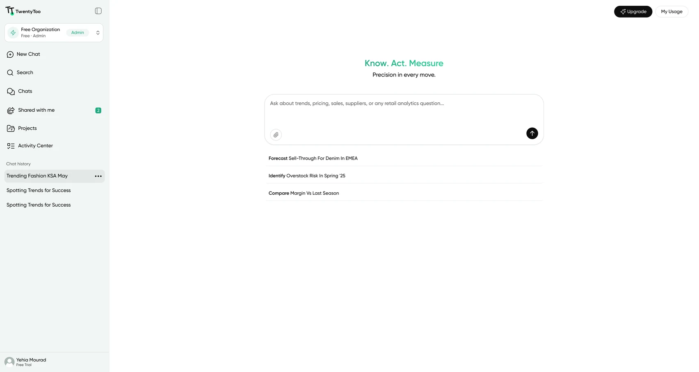
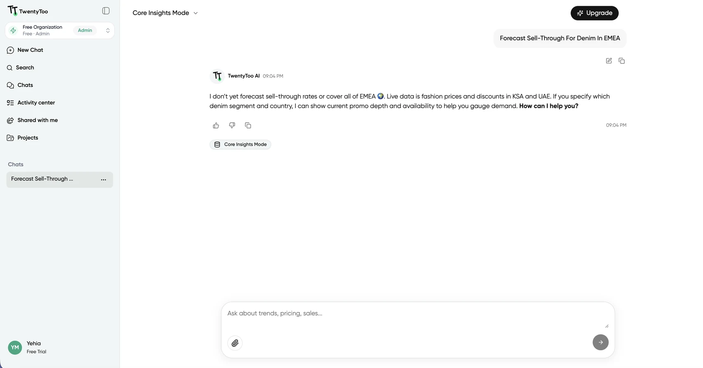
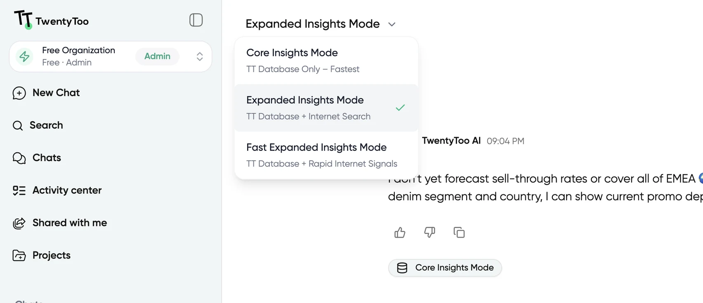

Designing for trust when the AI isn't sure التصميم للثقة لما الـAI مش متأكد
I lead product design at TwentyToo, a B2B AI-SaaS platform that gives retail teams real-time visibility into the Gulf market. The hard part wasn't the screens. It was turning AI answers that aren't always certain into something a category manager can act on. بقود تصميم المنتج في TwentyToo، منصة B2B AI-SaaS بتدي فرق الريتيل رؤية لحظية لسوق الخليج. الصعب مكانش الشاشات. كان إزاي أحوّل إجابات AI مش دايمًا مؤكدة لحاجة مدير كاتيجوري يقدر يتصرف عليها.
The short versionباختصار
- Lead product design on TwentyToo, a B2B AI-SaaS platform for Gulf retail market intelligence.
- The users are category managers: experts in their market, not in AI.
- Gave the empty state suggested questions written like real category-manager tasks, so a first-time user knows what to ask.
- Made uncertainty visible with confidence badges, ranges instead of single numbers, and clear alerts when data isn't live yet.
- Gave users control with three response modes that trade speed against source breadth.
- Built a style guide and a 96-component library with one visual language for charts and insight cards.
- Early-stage product, so no formal metrics yet. The signal came from PM and stakeholder feedback.
- بقود تصميم المنتج في TwentyToo، منصة B2B AI-SaaS لمعلومات سوق الريتيل في الخليج.
- المستخدمين مديرين كاتيجوري: خبراء في سوقهم، مش في الـAI.
- ادّيت الشاشة الفاضية أسئلة مقترحة مكتوبة زي مهام مدير كاتيجوري فعلًا، فالمستخدم الجديد يعرف يسأل إيه.
- خليت عدم اليقين ظاهر بـمؤشرات ثقة، ونطاقات بدل رقم واحد، وتنبيه واضح لما البيانات لسه مش live.
- ادّيت المستخدم تحكم بـتلات أوضاع للرد بتوازن بين السرعة واتساع المصادر.
- بنيت style guide ومكتبة 96 مكوّن بلغة بصرية واحدة للشارتس وكروت الـinsights.
- منتج في بدايته، فمفيش مقاييس رسمية لسه. الإشارة جت من فيدباك الـPM والـstakeholders.
Ask the market a questionاسأل السوق سؤال
TwentyToo gives retail and e-commerce teams real-time visibility into the Gulf market: prices, discounts, competitor moves and assortment shifts across millions of products. You ask in plain language, like "how have women's dress prices in the UAE changed over the last 90 days?", and the platform answers from its own database.
TwentyToo بتدي فرق الريتيل والتجارة الإلكترونية رؤية لحظية لسوق الخليج: أسعار وخصومات وحركة المنافسين وتغيّر التشكيلات عبر ملايين المنتجات. بتسأل بلغة عادية، زي "أسعار فساتين السيدات في الإمارات اتغيرت إزاي في آخر 90 يوم؟"، والمنصة بترد من قاعدة بياناتها.
The product is early in its life. Fashion is live in Saudi Arabia and the UAE, with more categories on the way. That shaped most of the decisions below.
المنتج لسه في بدايته. الفاشون شغال في السعودية والإمارات، وكاتيجوريز تانية جاية. وده أثّر على معظم القرارات تحت.
Experts in the market, not in AIخبراء في السوق، مش في الـAI
The people using TwentyToo are category managers. They know pricing and assortment better than anyone, but they aren't technical, and they turn these answers into real pricing decisions. An AI answer that is wrong but sounds sure of itself is worse than no answer.
المستخدمين مديرين كاتيجوري. عارفين التسعير والتشكيلة أحسن من أي حد، بس مش تقنيين، وبيحوّلوا الإجابات دي لقرارات تسعير حقيقية. إجابة AI غلط وواثقة من نفسها أسوأ من مفيش إجابة.
They shouldn't need to know how the model works to trust it.
مايحتاجوش يفهموا الموديل بيشتغل إزاي علشان يثقوا فيه.
Results feed pricing and assortment calls, so clarity beats volume.
النتايج بتغذي قرارات تسعير وتشكيلة، فالوضوح أهم من الكمية.
Model output has gaps and varying confidence, and coverage is still growing.
ناتج الموديل فيه فجوات وثقة متفاوتة، والتغطية لسه بتكبر.
Discovery through the people closest to the marketاكتشاف من الناس الأقرب للسوق
I lead product design end to end: the interaction model, the UI strategy and the style guide. With no dedicated research function, discovery ran through conversations with the PM and stakeholders, who know the category managers and the market first-hand. That suits an early-stage team that moves fast.
بقود تصميم المنتج من الأول للآخر: نموذج التفاعل، واستراتيجية الـUI، والـstyle guide. من غير فريق ريسيرش مخصص، الاكتشاف كان بيمشي من كلامي مع الـPM والـstakeholders، اللي عارفين مديرين الكاتيجوري والسوق من قريب. وده مناسب لفريق في بدايته بيتحرك بسرعة.
The interface should never claim more certainty than the system actually has.
الواجهة ماتدّعيش يقين أكتر من اللي النظام عنده فعلًا.
Design principle · TwentyTooمبدأ التصميم · TwentyToo
Make the uncertainty visible, then let people chooseخلي عدم اليقين ظاهر، وسيب الناس تختار
Three ideas drove the interface: a clear starting point, visible uncertainty, and a choice over depth. A design system underneath keeps it consistent.
تلات أفكار حكموا الواجهة: نقطة بداية واضحة، وعدم يقين ظاهر، واختيار للعمق. وتحتهم نظام تصميم بيحافظ على الاتساق.
4A · A clear starting pointنقطة بداية واضحةStart from a question, not a blank boxابدأ من سؤال، مش من خانة فاضية
A blank input tells a first-time user nothing about what the product can do. So the empty state suggests questions, written the way a category manager would actually ask them: forecast sell-through, identify overstock risk, compare margin against last season.
خانة الكتابة الفاضية مبتقولش للمستخدم الجديد المنتج يقدر يعمل إيه. فالشاشة الفاضية بتقترح أسئلة، مكتوبة زي ما مدير كاتيجوري بيسأل فعلًا: توقع الـsell-through، تحديد خطر الـoverstock، ومقارنة الهامش بالموسم اللي فات.
- Suggested prompts start with a verb, so they read as tasks, not features
- The input hint names what to ask about: trends, pricing, sales, suppliers, or any retail analytics question
- الأسئلة المقترحة بتبدأ بفعل، فبتتقري كمهام مش كمميزات
- تلميح خانة الكتابة بيذكر تسأل عن إيه: الترندات، التسعير، المبيعات، الموردين، أو أي سؤال تحليلات ريتيل

Show how sure the system isوري النظام متأكد قد إيه
- Confidence badges on results, so certainty is visible instead of assumed
- Ranges instead of a single exact number when confidence is lower
- Clear alerts when data is missing, or a region or category isn't live yet
- مؤشرات ثقة (badges) على النتايج، فالتأكد ظاهر مش متفترض
- نطاقات (ranges) بدل رقم دقيق واحد لما الثقة تقل
- تنبيه واضح لما البيانات ناقصة، أو المنطقة أو الكاتيجوري لسه مش live

Three modes, one trade-off: speed against breadthتلات أوضاع، مقايضة واحدة: السرعة قصاد الاتساع
Category managers don't always want the same thing from a question. Sometimes they need a fast answer from verified data, sometimes a wider picture. Instead of picking one speed for everyone, I named the trade-off and left the choice to the user.
مديرين الكاتيجوري مش دايمًا عايزين نفس الحاجة من السؤال. أحيانًا محتاجين إجابة سريعة من بيانات مؤكدة، وأحيانًا صورة أوسع. بدل ما أختار سرعة واحدة للكل، سميت المقايضة وسبت الاختيار للمستخدم.
| Modeالوضع | Speedالسرعة | Sourcesالمصادر |
|---|---|---|
| Core Insights | Fastestالأسرع | TwentyToo database onlyقاعدة بيانات TwentyToo بس |
| Fast Expanded Insights | Fastسريع | Database + rapid internet signalsالقاعدة + إشارات سريعة من الإنترنت |
| Expanded Insights | Slowerأبطأ | Database + internet searchالقاعدة + بحث في الإنترنت |

A style guide the team can build onstyle guide الفريق يقدر يبني عليه
- One consistent way to present charts and insight cards across the product
- A library of 96 reusable components, so new features ship without rebuilding the same patterns, and handoff gets faster
- طريقة واحدة متسقة لعرض الشارتس وكروت الـinsights في المنتج كله
- مكتبة من 96 مكوّن reusable، فالفيتشرز الجديدة تتسلّم من غير ما نعيد بناء نفس الأنماط، والـhandoff بقى أسرع
Design starts with the model's limitsالتصميم بيبدأ من حدود الموديل
Honest uncertainty design starts before the interface. I worked closely with engineering and data to understand what the model can and can't do today, like no sell-through forecasting yet and partial regional coverage, then designed the interface to reflect those limits instead of hiding them.
تصميم عدم اليقين بصدق بيبدأ قبل الواجهة. اشتغلت قريب مع الـengineering والداتا علشان أفهم الموديل يقدر يعمل إيه ومايقدرش دلوقتي، زي إن مفيش forecasting للـsell-through لسه والتغطية الإقليمية جزئية، وبعدين صممت الواجهة تعكس الحدود دي بدل ما تخبيها.
Early product, qualitative signalمنتج في بدايته، وإشارة نوعية
The product is early and doesn't have mature analytics yet, so I don't have metrics to report. The signal I worked from was direct feedback from the PM and stakeholders, who sit close to how category managers use the tool.
المنتج في بدايته ومعندوش analytics ناضجة لسه، فمعنديش مقاييس أعرضها. الإشارة اللي اشتغلت عليها كانت فيدباك مباشر من الـPM والـstakeholders، القريبين من طريقة استخدام مديرين الكاتيجوري للأداة.
Next, I'd add one simple measure from day one: how often each response mode gets used. It would turn the qualitative loop into something measurable.
الخطوة الجاية، كنت هزوّد مقياس بسيط من أول يوم: كام مرة كل وضع للرد بيتستخدم. ده هيخلي حلقة الفيدباك النوعية حاجة تتقاس.